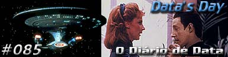
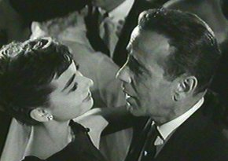
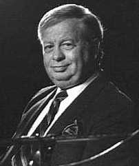

|

Texto de
Susana
Lopes de Alexandria

Clássico
da música norte-americana
embala cena antológica do episódio
|

|
 Numa cena do episódio "Data's Day", que já se tornou antológica, Data dança com Beverly Crusher no holodeck. Sem saber a razão pela qual o andróide deseja aprender a dançar, Beverly começa ensinando ao andróide alguns movimentos de sapateado. Data, como era de se esperar, aprende rapidamente os complicados passos da dança (99% das cenas foram feitas pelo próprio ator Brent Spiner).Quando ele revela, porém, que o propósito das aulas é não fazer feio na festa de casamento de Keiko e O'Brien, a médica decide ensinar-lhe uma dança mais apropriada para a ocasião e pede ao computador que inicie uma música. A música que ela solicita ao computador é "Isn't It Romantic", um clássico da canção americana dos anos 50. Esta música ficou ainda mais conhecida depois que fez parte da trilha sonora do filme "Sabrina", uma comédia romântica de 1954, dirigida por Billy Wilder, com um elenco estelar: Audrey Hepburn (Oscar de melhor atriz), Humphrey Bogart e William Holden ("Sabrina" teve um remake em 1995, com Harrison Ford e Julia Ormond).  Mel Tormé tem ainda uma forte ligação com Jornada nas Estrelas: seu filho, Tracy Tormé, escreveu vários episódios de A Nova Geração, como "Haven", "The Big Goodbye", "Conspiracy" (primeira temporada) e "The Schizoid Man" (segunda temporada). Tracy Tormé acabaria brigando com os produtores por causa do episódio "The Royale" (segunda temporada). Embora Tormé tenha escrito o episódio, decidiu retirar seu nome dos créditos depois que seu roteiro foi totalmente alterado. O episódio precipitou sua saída do quadro fixo dos escritores de Jornada, passando a exercer o cargo autônomo de consultor de criação. Para ouvir "Isn't It
Romantic" na voz do famoso pai do roteirista, clique aqui
(2.1 Mb - Mp3).
|